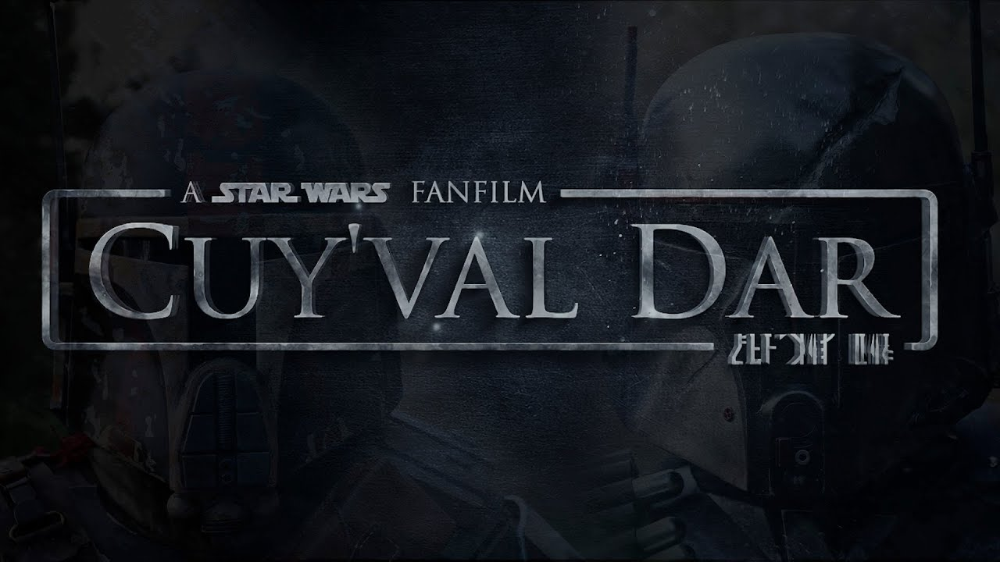
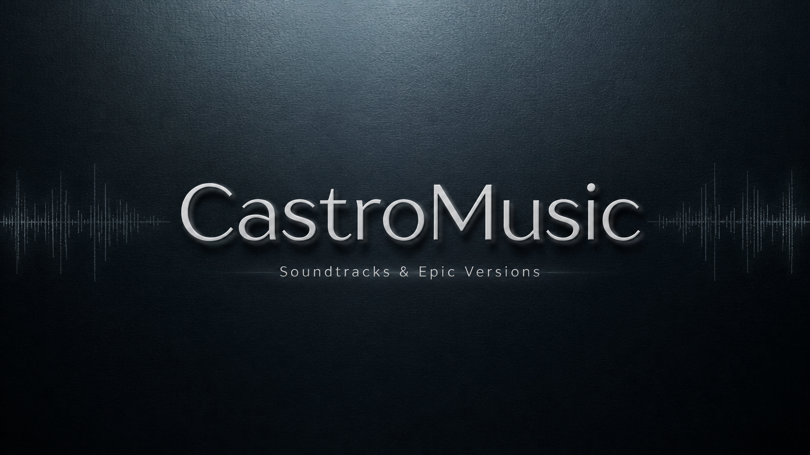
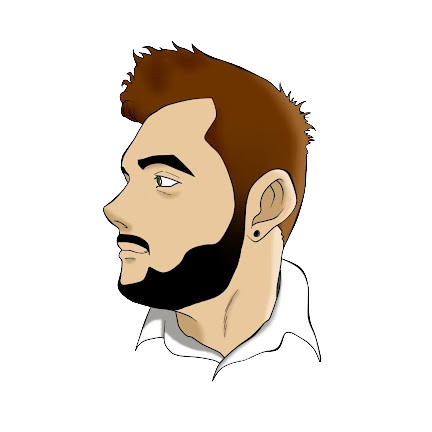
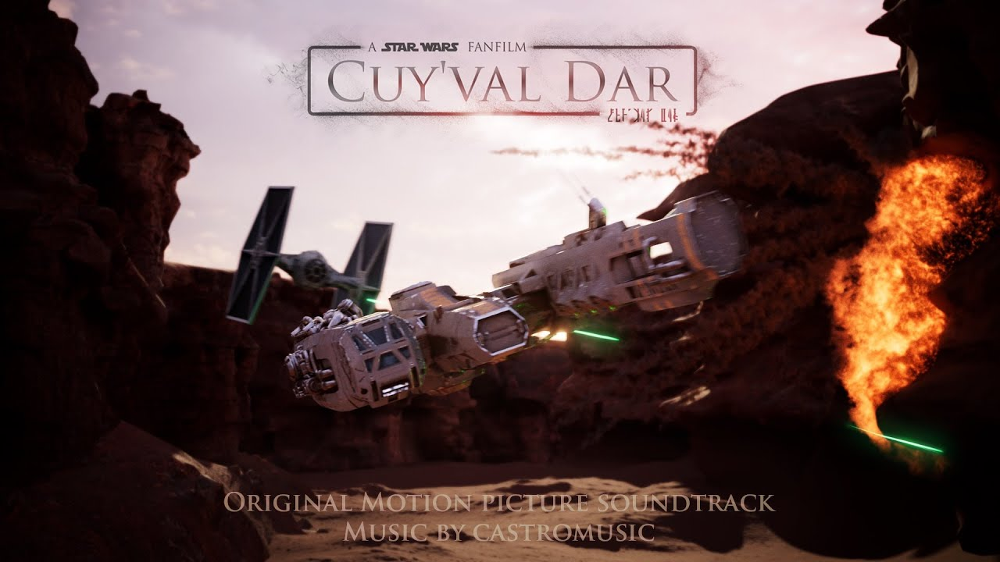
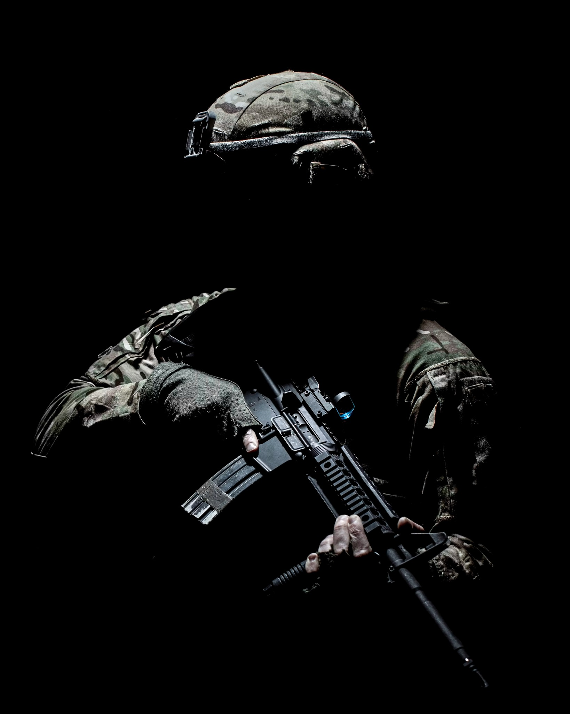
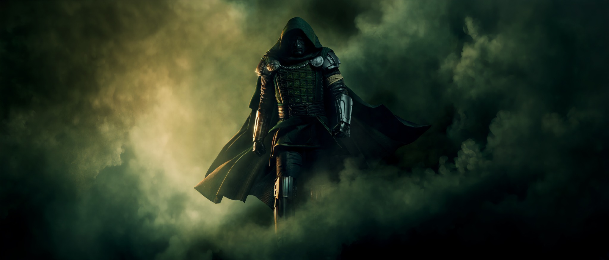
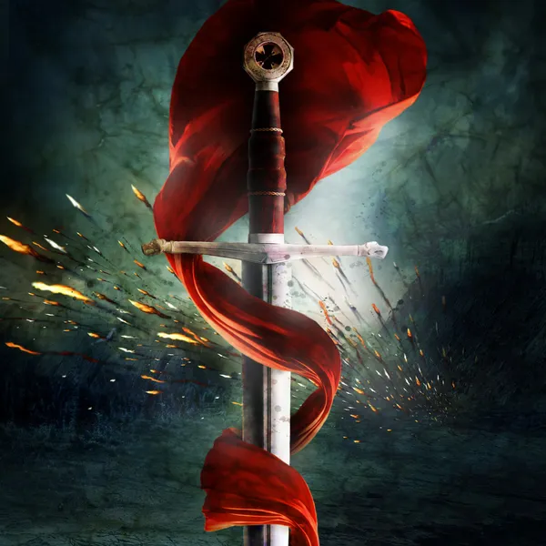
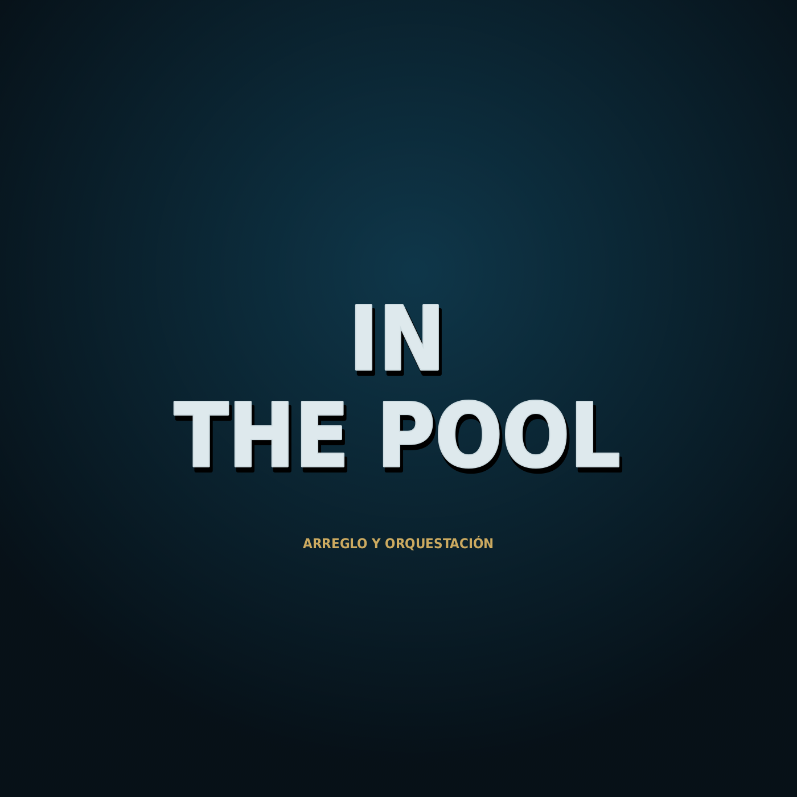

PROYECTO AUDIOVISUAL
CUY'VAL DAR
CAPÍTULO 1: LA SENDA DEL MANDALOR
Capítulo completo del fanfilm de Star Wars, con banda sonora original compuesta y orquestada para el proyecto.

Composición original, orquestación y producción musical para imagen.

Soy Jesús Castro, compositor de música para cine y medios audiovisuales. Me interesa trabajar la música como parte de la narración: encontrar el tono de una escena, acompañar una emoción y construir una identidad que permanezca más allá de la imagen.
Llevo más de 20 años dedicado a la música. Mi formación comenzó desde niño con estudios de solfeo y continuó con la práctica instrumental dentro de una banda de música, donde he tocado trompeta, bombardino y trombón.
Actualmente curso el Máster de Composición para Cine y Series en EARTES, ampliando mi formación específicamente en el ámbito de la composición audiovisual.
A través de CastroMusic publico parte de mi trabajo en plataformas como YouTube y Spotify, combinando composiciones originales, arreglos, orquestaciones y distintas formas de explorar el lenguaje cinematográfico.
Mi objetivo es seguir creciendo dentro del sector audiovisual y colaborar con directores, productoras y otros profesionales en proyectos en los que la música tenga un papel real dentro de la historia.
Selección de fragmentos representativos de mi trabajo como compositor.

Capítulo completo del fanfilm de Star Wars, con banda sonora original compuesta y orquestada para el proyecto.

Banda sonora original compuesta y orquestada para este cortometraje fanfilm de Batman.

Tema final para los créditos del primer capítulo de Cuy'Val Dar.

Composición original de carácter épico y motivacional, concebida para su publicación como pieza independiente.

Reinterpretación del tema principal de Invincible, adaptado a un lenguaje inspirado en Hans Zimmer.
Composiciones originales, arreglos y orquestaciones.



Material de muestra y proyectos de trabajo.
Cuéntame qué proyecto tienes entre manos, qué necesitas y cómo puedo ayudarte desde la música.